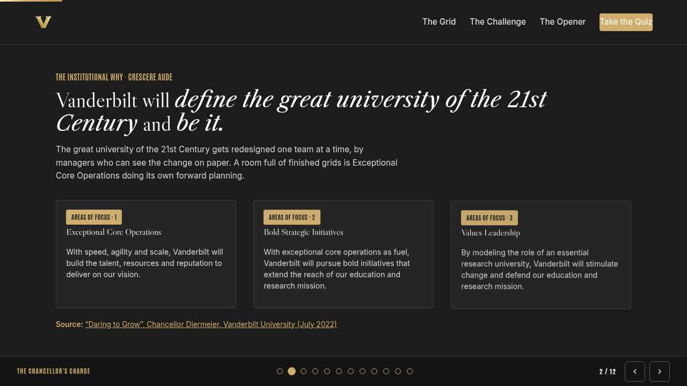
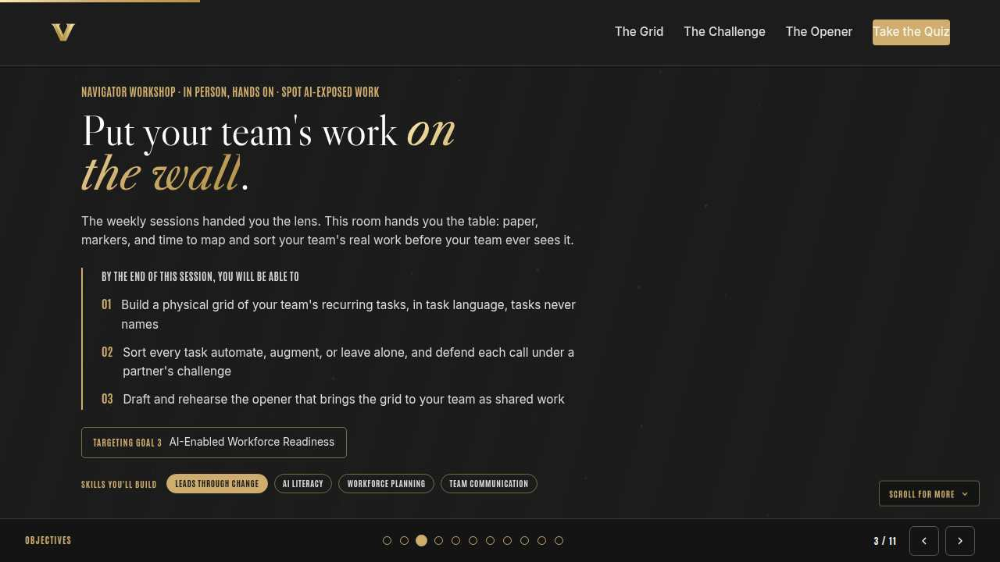
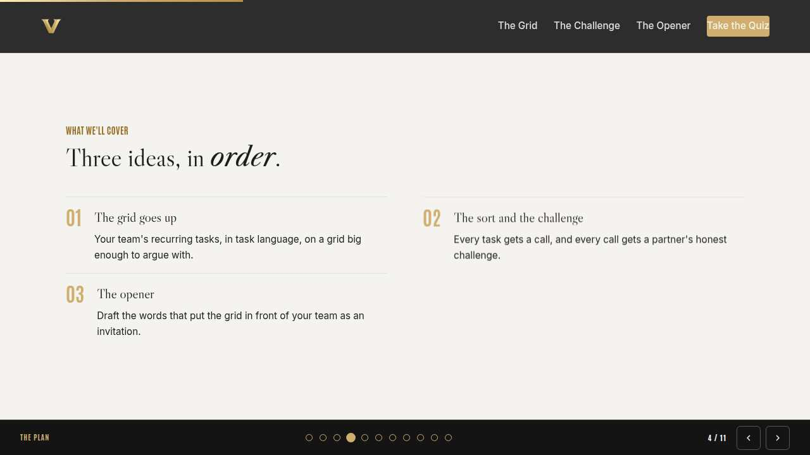
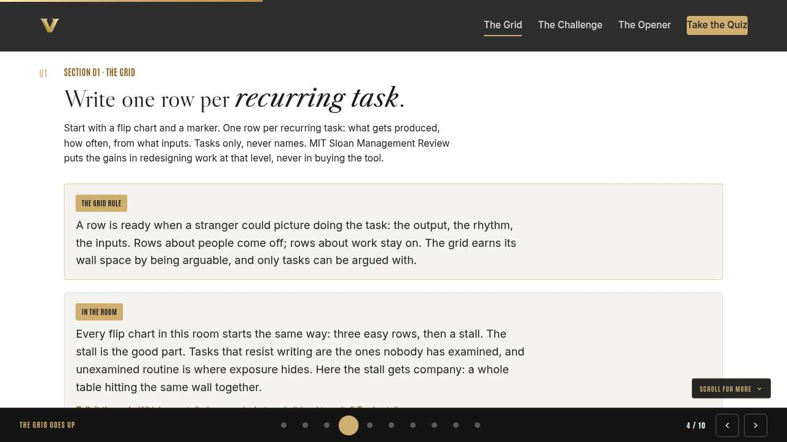
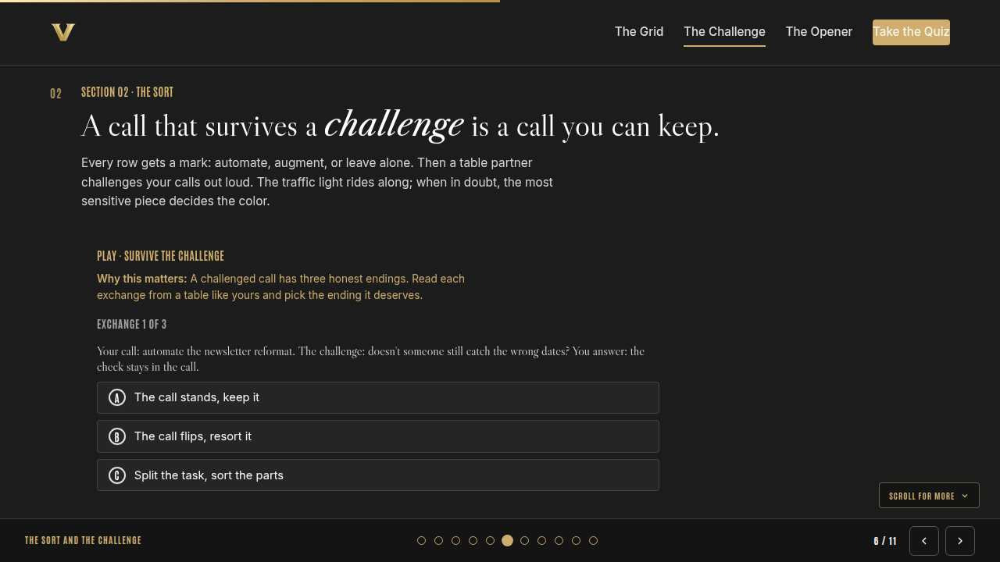
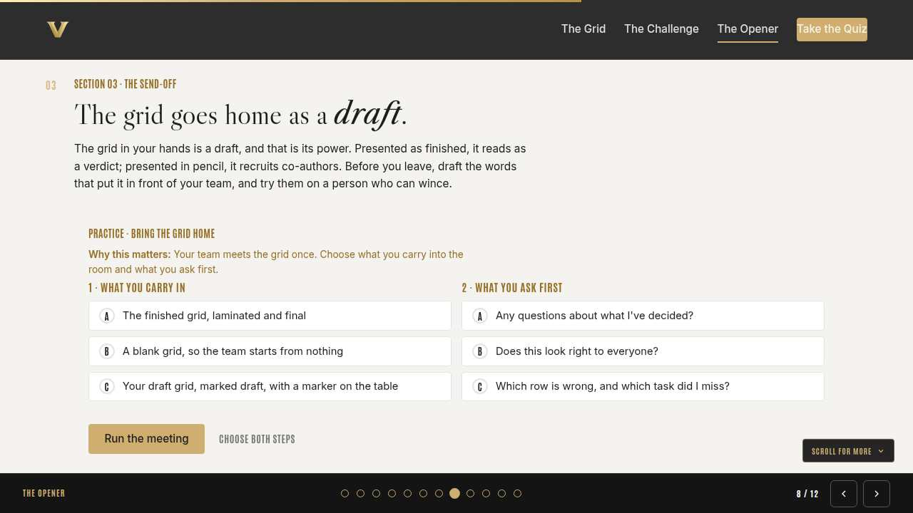
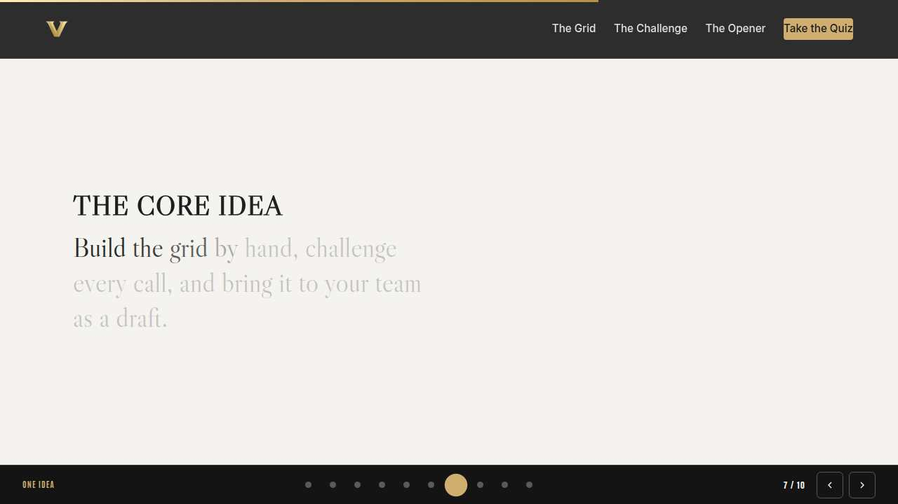
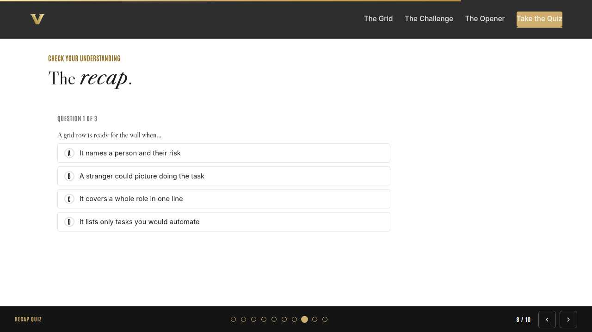
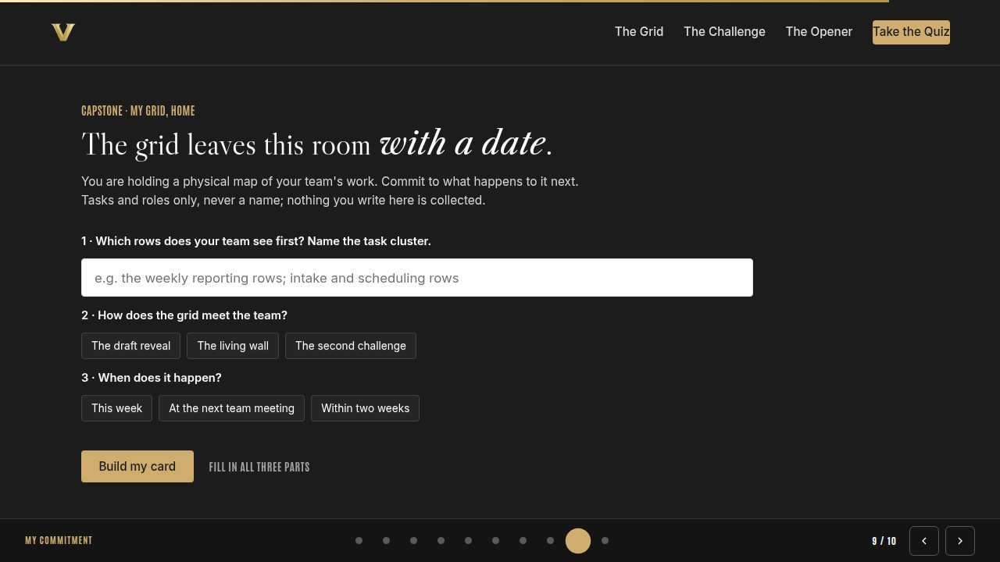
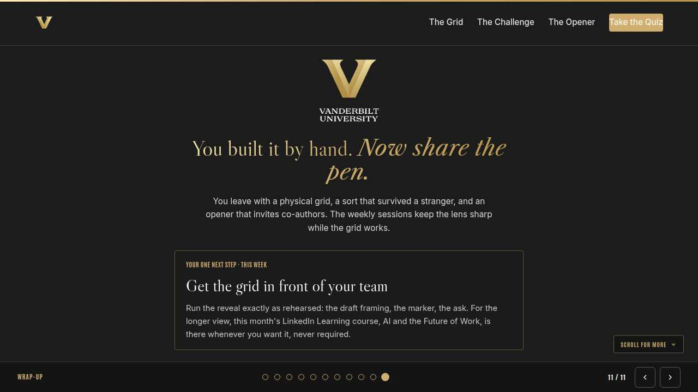

Vanderbilt · Anchor's Edge · ATD facilitator guide · print edition
The Team Grid, the facilitator guide

Run of show
| Screen | Full (min) | Core (min) |
|---|---|---|
| Welcome / QR | 3 | 2 |
| Why we're here | 4 | 2 |
| Objectives | 2 | 1 |
| Agenda | 2 | 1 |
| The grid goes up | 9 | 6 |
| The sort and the challenge | 11 | 8 |
| The opener | 9 | 6 |
| The core idea | 2 | 1 |
| Recap quiz | 5 | 4 |
| Capstone commitment | 5 | 3 |
| Closing | 2 | 2 |
| Total | 54 | 36 |
The goal this month serves
Goal 3, AI-Enabled Workforce Readiness.
Audience
Vanderbilt people managers and team leads, in person with their navigator. Works for 8 to 30 at tables of 4 to 6; every exercise runs on flip charts, the printed grid worksheet, or the manager's own device. Best after the month's weekly sessions, and it stands alone for anyone who missed them.
Room setup
In person, navigator led: projector plus presenter device, tables that pair easily, learners on their own devices via the welcome-slide QR. Nothing typed into the deck is saved or sent.
Materials
- Meeting platform with screen share and breakout rooms; deck link ready to paste in chat
- Facilitator machine with the facilitator edition open; notifications off
- Learners on their own devices with the learner link
- Chat open for share-outs; the capstone copy button pastes there cleanly
A week before
- Run the learner edition start to finish and do every interaction honestly; you will demo at least one live.
- Read this month's theme page on the Anchor's Edge dashboard so the goal tie-in is fluent.
- Send the invite with the learner link and one line on what to bring.
The day before
- Test screen share with the facilitator edition; confirm the notes rail is readable.
- Open the learner link on a second device; the QR must land there.
- Run the section interactions once so you can drive them without reading.
30 minutes before
- Welcome slide up as people join; link pasted in chat.
- Close every other tab; silence the machine.
- Breakout rooms pre-configured in pairs.
When things go sideways
If The projector or room screen fails: The workshop survives it: everything runs on paper and learner devices via the welcome QR. Read the cards aloud from your own screen and keep the builds moving.
If Flip charts or easels run short: Tape printed grid worksheets together or use any large paper flat on the table. The lab needs big, shared, writable surfaces, nothing fancier.
If A manager names a specific employee while sorting or challenging: Protect them warmly and immediately: 'Hold that. Tasks and roles, never names.' In a shared room the norm matters double, because the walls have more readers than a spreadsheet.
If A pair finishes the challenge early or a table runs cold: Send early finishers to a slow table as guest challengers. A fresh stranger reading a grid finds the row its owner stopped seeing.
Tough questions, ready answers
Q: What stops this wall of grids from becoming a cut list?
The unit of the grid is the task, and the promise that travels with it: exposed tasks mean redesign, with the people who do the work deciding what fills the freed hours. Goal 3 is workforce readiness. A team that sorts its own work in the open shapes what changes, and roles and names never touch the wall.
Q: My partner and I disagreed on a call and neither budged. Who wins?
Nobody has to. Write both readings on the row and take the disagreement to the people who actually do the task; they hold the missing evidence. A grid that carries an honest open question is stronger than one that papered over it.
Q: Can I photograph my grid and ask an AI tool for a second opinion?
Run the light first. A grid in task language with no names is internal content: yellow, approved VU tools only. If any row slipped toward people details, rewrite it before any photo. And keep the sort decision human; the tool can question your calls, never make them.
Copy-paste templates
Pre-work invite (paste into the calendar invite)
Subject: In person this month: your team's AI-exposure grid, built by hand with your navigator. Bring a rough list of the tasks your team repeats every week, or just bring the week in your head. Paper, markers, and a table partner provided. Tasks and roles only, never names, and nothing you write is collected.
7-day pulse (send one week after)
Subject: Where is the grid now? Three lines, reply whenever: 1) Has your team seen the grid? 2) What did they add or flip? 3) When is the sort conversation, and what will you ask first?
After the session
Seven days out, send the pulse: 'Has the team seen the grid? What did they add or flip? When is the sort conversation?' Count of grids that reached a team is the month's Level 3 metric.
Welcome / QR Full 3 min · Core 2
Get everyone into the deck on their own device and set the tone: 90 minutes, in person, hands on.
Say
“Welcome to the Navigator Workshop. Scan the code so this session runs on your device too. 90 minutes, one focus: The team AI-exposure mapping workshop: the whole grid, built by hand.”
Do
- Slide projected as people arrive; phones up before you speak.
- State the norm once: type into your own device, nothing you enter is saved or sent.
Watch for: People lurking without the deck open. The interactions only land if the deck is on their screen.
Transition: “Before the topic, thirty seconds on why Vanderbilt is asking for this hour.”

Why we're here Full 4 min · Core 2
Anchor the session in the Chancellor's charge and name the goal this month serves, inside one minute.
Say
“One sentence from the Chancellor sits over everything we do: Vanderbilt will define the great university of the 21st Century and be it. A room full of finished grids is Exceptional Core Operations doing its own forward planning, one team at a time. This month serves Goal 3, AI-Enabled Workforce Readiness.”
Do
- Read the mission line slowly, once; name the goal, once.
- No discussion here; the whole slide is under a minute.
Transition: “Here is what you will be able to do in 90 minutes.”

Objectives Full 2 min · Core 1
Set the contract for the session in under a minute.
Say
“By the end of this session: build a physical grid of your team's recurring tasks, in task language, tasks never names; sort every task automate, augment, or leave alone, and defend each call under a partner's challenge; draft and rehearse the opener that brings the grid to your team as shared work. That is the whole contract.”
Do
- Read the three objectives briskly; do not elaborate yet.
Transition: “Three stops to get there.”

Agenda Full 2 min · Core 1
Show the path so the room can pace itself.
Say
“Three stops: the grid goes up, the sort and the challenge, the opener. Each one has something to play with, so keep the deck open.”
Do
- Point once at each stop; ten seconds each.
Transition: “Stop one.”
Core path: Core: skip the read-through, gesture at the slide in passing.

The grid goes up Full 9 min · Core 6
Get every manager's team work physically on paper, in task language, before any sorting starts.
Say
“Everything this month has been building toward the thing on your table: a big blank grid and a marker. Your team's recurring work goes on it today, one row per task, tasks only, never names. Writing by hand is the point. The rows that come slowly are the ones worth having, because work that resists naming has usually never been looked at straight.”
Do
- Hand out markers and sheets; the flip chart at the front carries the two rules: tasks never names, output plus rhythm plus inputs.
- Give the room quiet drawing time; walk the tables and read over shoulders for people-language rows without correcting them aloud yet.
- Show the In the room card when most charts hold five or six rows, and run the discussion on stalls.
- Run the sheet trade at each table: neighbors circle rows a stranger couldn't picture, owners rewrite on the spot.
Ask
“Which row stalled you, and why that one?”
Expect:
- Work that lives in one person's head
- Cleanup nobody has ever called a task
- Some managers realize they don't know a task's inputs
Respond: Name the pattern back: the stalled rows are the exposure blind spots. Not knowing a task's inputs is itself a finding worth writing down.
Debrief: A grid is honest when a stranger could run the week from it. Every chart in this room just got more honest than the org chart.
Watch for: Managers writing role names or people descriptions into rows. Redirect warmly every time: tasks on the grid, people in your care.
Transition: “The grid is up. Now every row gets a call, and every call gets a witness.”
Core path: Core: cap the grid at eight rows and skip the sheet trade; circle your own suspect rows as you walk the tables.

The sort and the challenge Full 11 min · Core 8
Sort every row automate, augment, or leave alone, then pressure-test the calls in pairs, inside the traffic light.
Say
“Three marks, straight from this month's Tuesday session, now applied at team scale. Automate: AI does it and a person checks. Augment: AI helps and a person drives. Leave alone: human all the way. This is the same rebalancing the World Economic Forum's Future of Jobs survey finds employers planning everywhere, task by task between people and tools; your grid does it locally, with the people who know the work. And the light we share all year rides every mark: green is public or generic, go. Yellow is internal, approved VU tools only. Red is private information about people, never. Mark your rows, then find your partner, because a sort nobody challenged is just a mood.”
Do
- Give the room quiet marking time; sticky dots or marker initials both work fine.
- Run Survive the challenge on learner devices before the pairing, so the three endings are fresh.
- Pair managers across teams, never within one, and let the challenges run; listen for flips and splits to quote at the debrief.
Ask
“Who had a call flip, and what did the challenge show you?”
Expect:
- Rule-following that had felt like judgment
- A bundle hiding a red thread
- A few will admit they flattered their team's work
Respond: Flips are the receipts. A grid that leaves this room unchanged probably wasn't challenged hard enough.
Debrief: Stands, flips, splits: all three are wins. The only losing call is the one nobody questioned.
Watch for: Anyone marking automate on work that touches private information about people. Restate the light on the spot: red, never, whatever the efficiency.
Transition: “Your grid is sorted and it survived a stranger. The harder audience is your team, so the opener comes next.”
Core path: Core: mark the top six rows only; run one challenge each way instead of the full grid walk.

The opener Full 9 min · Core 6
Draft and rehearse the words that bring the grid to the team as a draft and an invitation.
Say
“The grid you are holding can land two ways at home: verdict or draft. The difference is mostly staging: what you physically carry in, and the first sentence out of your mouth. So we draft the opener here, out loud, where the stakes are low and the feedback is free. You will deliver it to a stranger before you ever deliver it to your team.”
Do
- Run Bring the grid home on learner devices; give the room time for both choices.
- Run the cross-table rehearsal: openers delivered standing, to someone from another table playing a skeptical team member.
- Take one strong opener aloud for the whole room and name the pattern: draft framing, marker on the table, the which-row-is-wrong ask.
Ask
“What did your skeptical stranger do that you didn't expect?”
Expect:
- Asked whose job the automate rows are
- Went quiet, which felt worse than pushback
- Someone will say the rehearsal changed their opener completely
Respond: That is why the rehearsal happens here. Every reaction you just survived is one your team can no longer surprise you with.
Debrief: The opener has a shape: this is a draft, here is the marker, which row is wrong, which task did I miss.
Watch for: Openers that lead with leadership pressure or the word efficiency. Steer back to invitation: the team helps decide what fills the freed hours.
Transition: “Recap, then the grid gets its date.”
Core path: Core: skip the cross-table round; rehearse once with the sort partner instead.

The core idea Full 2 min · Core 1
Land the one sentence the session exists to install.
Say
“If you keep one sentence from today, this is it. Read it once, out loud: A map your team can argue with beats one they only hear rumors about.”
Do
- Pause two beats after reading; the word animation carries it.
Transition: “The recap makes it stick.”
Core path: Core: pass through in stride; the sentence reads itself.

Recap quiz Full 5 min · Core 4
Score the learning while it is fresh; wrong answers are teaching moments, not failures.
Say
“Three questions, on your own screen. Answer honestly; the explanations are where the learning sticks.”
Do
- Give the room 90 seconds to run it individually.
- Ask for a show of results in chat: how many got 3 of 3?
- Read out the explanation for whichever question drew the most misses.
Watch for: Rushing past the why lines. The explanations carry the teaching.
Transition: “Now point it at your real week.”

Capstone commitment Full 5 min · Core 3
Convert the session into one named, dated action per person.
Say
“Last build, and it is the one that matters: the grid needs a date. Pick the rows your team sees first, how the reveal happens, and the window, then write the card. Tasks and roles only, never a name. When you leave, the grid travels rolled, never filed. Quiet writing time, then a few read-alouds.”
Do
- Two quiet minutes; everyone builds their own card.
- Invite two or three volunteers to read their card aloud or paste it in chat.
- Remind: copy the card somewhere you will see it this week.
Watch for: Vague entries. Nudge for a name-able situation and a real date.
Transition: “Last slide.”

Closing Full 2 min · Core 2
End with the next step and where this thread continues.
Say
“Look at these walls: that is the month's theme made physical. Monday's session gave you the mapping lens, Tuesday gave every member of your team the same sort for their own week, and Thursday's hype filter keeps the claims about these tools honest. The grid you are carrying is those three sessions with a marker in hand. For the longer view of where workflows are heading, this month's LinkedIn Learning course, AI and the Future of Work: Workflows and Modern Tools for Tech Leaders, is there whenever you want it. Now go put the grid on a wall your team walks past.”
Do
- Point at the next-step card; one sentence.
- Name the rest of the week's rhythm: the other sessions echo this month's theme.
Generated from facilitator/notes.json. The on-screen facilitator edition lives at ./ alongside this guide.